在 MATLAB 与 Simulink 中
设计一套导弹制导系统
一枚雷达寻的导弹，如何在 3.5 秒内完成「搜索 → 捕获 → 命中」？
请向下滚动，我们一页一页地讲给你听。
这个示例，到底做了什么？
一句话：它在电脑里完整复现了一枚雷达制导导弹——从开机搜索目标、锁定目标，到最后命中目标的全过程。
这不是一个玩具演示。弹体模型出自多篇控制领域经典论文，是学术界与工程界反复使用的基准对象；仿真结果里，导弹的脱靶量只有 0.265 米。
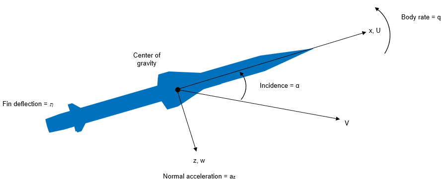
把它想象成一只捕猎的猎鹰
导弹的每个部分，都对应猎鹰身上的一个"器官"——
打开模型：一张"世界地图"
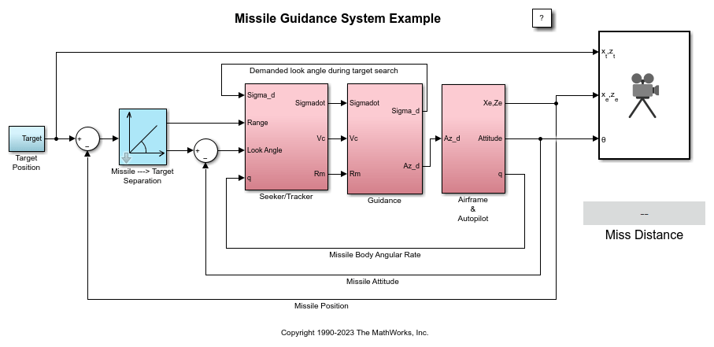
信号怎么在回路里流动？
信号沿链条流动，而"弹体动了"又反过来改变导弹与目标的相对几何——形成闭环。
这场"追猎"的初始设定
故事开始前，双方各就各位——
弹体与自动驾驶仪：模型的主干
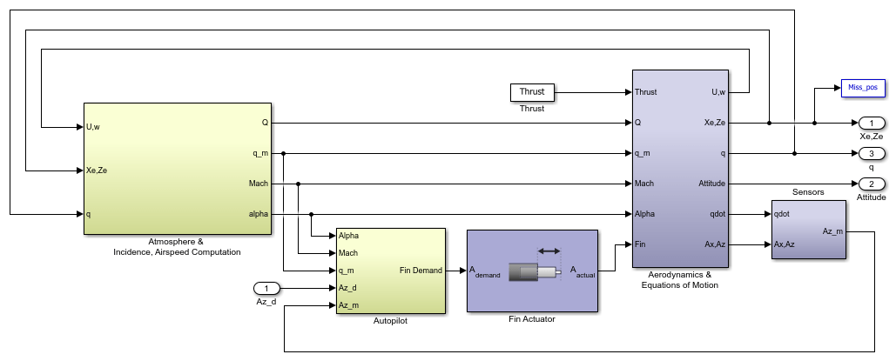
国际标准大气：
一切计算的起点
空气密度、温度、声速都随高度变化，直接决定气动力大小。模型实现了国际标准大气（ISA）的两段式近似：
对流层（0–11 km）温度随高度线性下降，每升高 1 km 约降 6.5 ℃；平流层下部（11–20 km）温度恒定（约 −56.5 ℃），空气继续变稀薄。
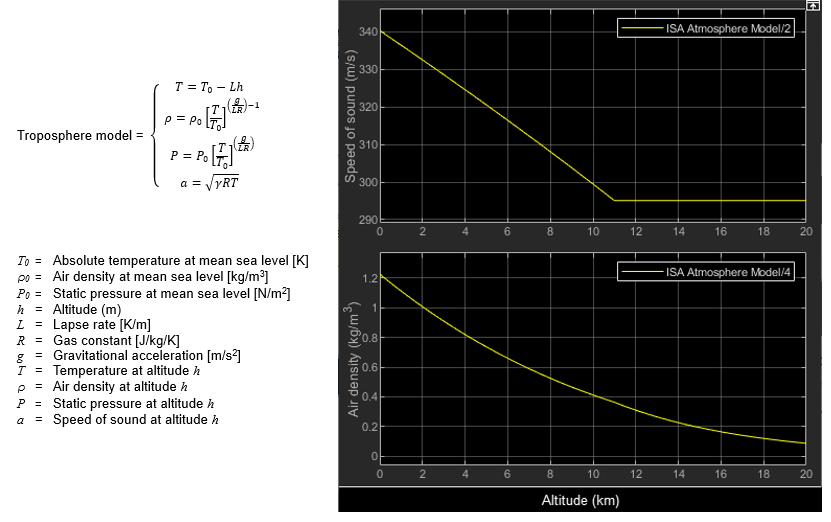
气动力与运动方程：导弹的"物理引擎"
根据当前的马赫数、迎角和舵偏查出气动力系数，算出轴向力、法向力和俯仰力矩，再积分运动方程，得到位置、速度与姿态。
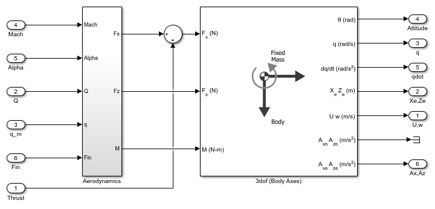
非线性怎么办？
查表 + 插值
气动力系数并非常数，而是以二维数据表存储：横轴马赫数（2 → 4，步长 0.5），纵轴迎角（−20° → +20°，步长 1°）。
仿真运行到任一状态，就用 2-D Lookup Table 模块实时插值出当前系数——这是处理非线性气动特性的标准工程手段。
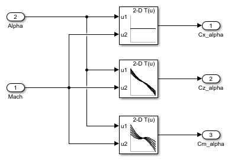
三环路自动驾驶仪：让弹体"听话"
任务：接收制导律下发的法向过载指令，并精确实现它。三个环路层层递进：
舵偏内环
保证舵面快速、准确偏转。
阻尼环
速率陀螺反馈角速度，增阻尼、抑振荡。
过载外环
加速度计测实际过载，消除静差。
从 2 马赫到 4 马赫，弹体响应特性变化剧烈——一套固定参数不可能全程适用。解决办法是增益调度：增益存入查找表，飞行中按迎角 × 马赫数实时切换，并配合抗积分饱和防止舵面限幅时积分器"憋坏"。
设计之前，先"侦察"弹体
经典控制设计的第一步：在多个配平飞行条件下把非线性模型线性化，得到一组线性模型，分析其开环频率特性。
MATLAB 可自动完成配平与线性化，再用 Control System Toolbox 可视化弹体的频率响应——设计增益前先看清"脾气"。
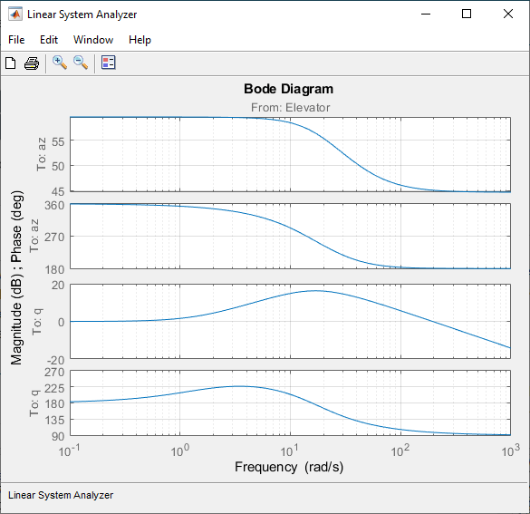
导引头：导弹的"眼睛"与"前庭"
既要盯住目标（驱动万向节天线），又要给出视线角速率估计。内部两个回路协同：
跟踪环 Tracking Loop
让天线始终对准目标。时间常数 tors = 0.05 s——快了噪声大、慢了跟不上，典型的工程折中。
稳定环 Stabilization Loop
弹体自己在颠簸，稳定环用速率陀螺抵消弹体转动的影响，让"视线"稳稳指向目标。
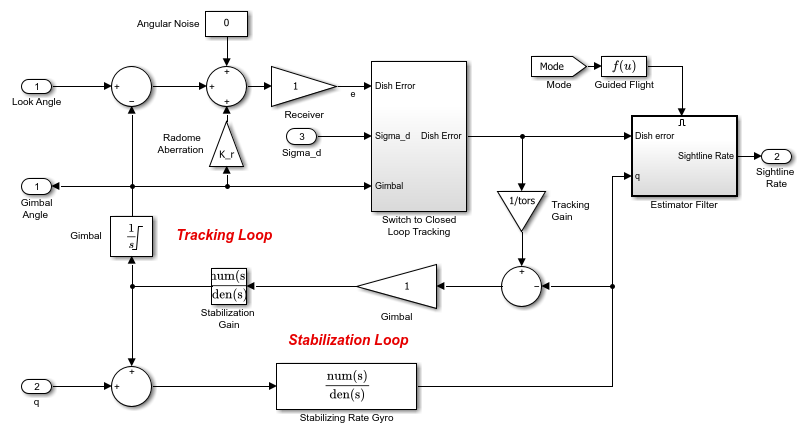
Stateflow 状态机：作战指挥官
什么时候搜索、什么时候攻击？Guidance 子系统内嵌的 Stateflow 状态机，
管理着三个作战阶段：
搜索 Target_Search
状态机直接控制万向节按预设规律摆动，在空域中扫描目标。
捕获 Acquire
目标进入 10° 雷达波束内，标记"已捕获"，短暂延迟确认。
闭环制导 Guided
比例导引接管控制权，导弹直奔预测交会点。
模式切换由 Simulink 事件或图内部事件触发；状态机还定义了丢失锁定、未捕获到目标等异常情形的降级逻辑。
一张图看懂全部作战模式
上半部分是制导状态：Target_Search（搜索）、Target_Look（凝视）、Guided（闭环制导），以及 Abort 中止与丢失锁定后的降级路径。
下半部分是引信状态机：Inert 待机 ⇄ Armed 解锁——战斗部只有在闭环制导真正启动后才解除保险，这是真实导弹的安全设计。
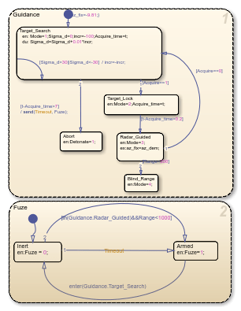
真实世界的"不完美"：
天线罩像差
雷达天线罩会折射回波信号，让导引头读出一个略有偏差的目标视角——这是一种典型的寄生反馈，可能损害精度甚至导致不稳定。
模型用增益 K_r = −0.02 的线性关系近似这一非线性效应，用于检验系统鲁棒性。
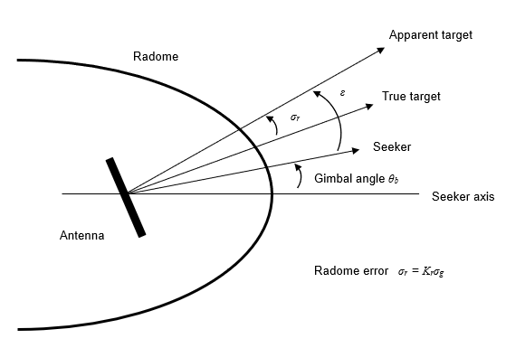
比例导引（PNG）：70 年不衰的"灵魂算法"
直觉表述：两个匀速运动的物体，只要视线方向保持不变（视线角速率 λ̇ = 0），就必然相遇。所以一旦发现视线在转动，就施加一个与视线角速率成正比的过载去"掰直"它。
实现它，只需要两样信息
都由导引头提供——
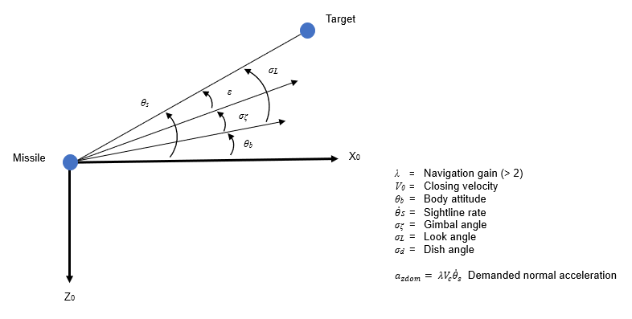
实战检验：一次完整的 3.46 秒
运行模型（sim('aero_guidance') + aero_guid_plot），看数字导弹如何完成使命——
跑完之后：脱靶量写在这里
导弹的"体检报告"
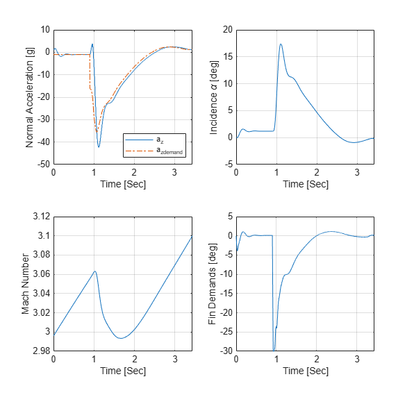
两条曲线，讲完这场追猎
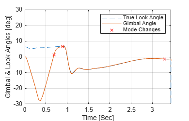
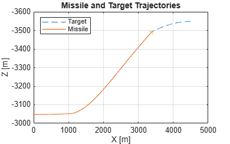
内置 3DoF 动画：直观的视觉参考
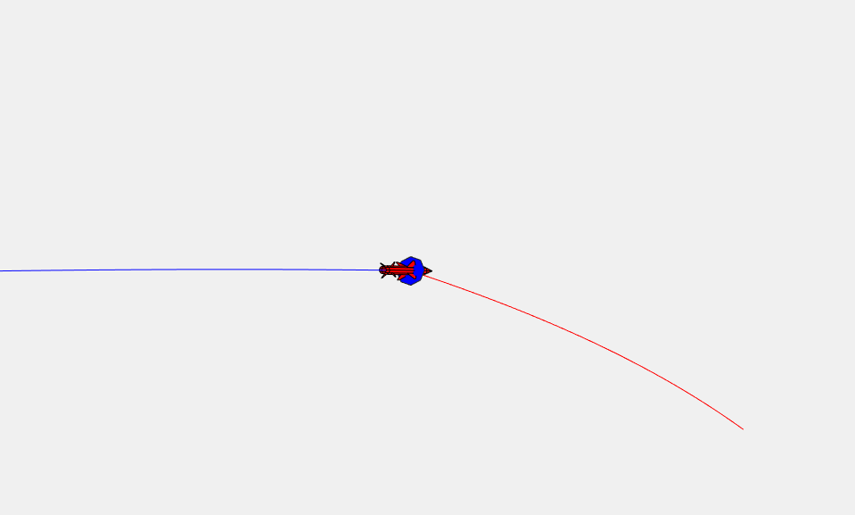
关键参数 · 导弹本体与初始条件
数值均出自初始化脚本 aero_guid_dat.m，可对照复现。
| 参数 | 数值 | 说明 |
|---|---|---|
| 弹体质量 mass | 13.98 kg | 轻型战术导弹量级 |
| 参考面积 Sref | 0.44 ft² ≈ 0.041 m² | 气动系数的归一化基准 |
| 参考长度 dref | 0.75 ft ≈ 0.229 m | 对应弹径 |
| 俯仰转动惯量 Iyy | 182.5 kg·m² | 绕弹体坐标系 y 轴 |
| 发动机推力 Thrust | 10 kN（恒定） | 仿真全程不变 |
| 初始高度 h | 10 000 ft ≈ 3 048 m | 初始迎角、弹道角均为 0 |
| 初始速度 v | 984 m/s（马赫 3） | 平飞出发 |
| 目标初始位置 | 前方 4 500 m · 上方 500 m | 以 328 m/s 迎面飞来 |
关键参数 · 执行机构与传感器
| 参数 | 数值 | 说明 |
|---|---|---|
| 舵面限幅 fin_max/min | ±30° | 最大偏转角 |
| 舵面速率限幅 | 500 °/s | 舵机偏转速率上限 |
| 舵机带宽 wn | 150 rad/s（阻尼 0.7） | 二阶执行机构模型 |
| 加速度计位置 l_acc | 重心前 0.5 m | 三环路设计的测量点 |
| 最大需求过载 | 40 g | 自动驾驶仪指令上限 |
| 气动查表网格 | Mach 2:0.5:4 × α −20°:1°:20° | 二维插值的自变量网格 |
关键参数 · 导引头
| 参数 | 数值 | 说明 |
|---|---|---|
| 万向节限幅 | ±35° | 天线转动范围 |
| 雷达波束宽度 | 10° | 目标进入即视为捕获 |
| 跟踪环时间常数 tors | 0.05 s | 响应速度与噪声的折中 |
| 速率陀螺带宽 | 100 Hz | 稳定环增益 Ks = 带宽/5 |
| 估计滤波器带宽 | 7 rad/s | 约为自动驾驶仪带宽之半 |
| 天线罩像差 Kr | −0.02 | 万向节角 → 视角误差 |
术语小词典（上）
- 法向过载
- 垂直于弹轴方向的加速度，以 g 为单位。导弹不直接"控制轨迹"，而是控制过载——轨迹是过载积分的结果。
- 迎角（Alpha）
- 弹轴与来流方向的夹角，升力与阻力都由它驱动。本例工作范围 ±20°。
- 马赫数（Mach）
- 速度与当地声速之比。声速随高度（温度）变化，同一速度在不同高度的马赫数不同。
- 配平与线性化
- 在定直平飞等"平衡点"上求出舵偏/迎角组合，把非线性模型近似为线性模型——经典控制设计的起点。
- 增益调度
- 按飞行状态（迎角 × 马赫数）实时切换控制器参数，用一组局部线性设计覆盖全飞行包线。
术语小词典（下）
- 抗积分饱和
- 舵面有 ±30° 限幅；指令超限时防止积分器继续累积，否则退饱和时会产生大超调。
- 视线角速率 λ̇
- 导弹—目标连线方向的变化速率，比例导引的核心输入，由导引头估计给出。
- 脱靶量
- 弹目交会中最近点的距离。本例 0.265 m——战斗部有效杀伤半径轻松覆盖。
- 寄生反馈
- 天线罩像差、陀螺对过载敏感等非理想效应，把输出"偷偷"喂回输入，是制导系统不稳定的重要隐患。
- ISA 国际标准大气
- 以海平面 15 ℃、101 325 Pa 为基准的理想化大气模型，按高度分段给出温度/压强/密度。
来源与文件清单
本页所有内容与图片均转述自 MathWorks 官方示例，仅作实训学习用途，版权归原作者所有。
- 📄 官方文档：Designing a Guidance System in MATLAB and Simulink
https://ww2.mathworks.cn/help/simulink/slref/designing-a-guidance-system-in-matlab-and-simulink.html - 📁 模型与脚本：
aero_guidance.slx·...Example.m·aero_guid_dat.m·aero_guid_plot.m·aero_guid_autop.mat（本地示例文档原件/，只读）
延伸阅读 · 官方引用文献
- Bennani, Willemsen & Scherer. "Robust LPV Control with Bounded Parameter Rates." AIAA-97-3641, 1997.
- Mracek & Cloutier. "Full Envelope Missile Longitudinal Autopilot Design Using the SDRE Method." AIAA-97-3761, 1994.
- Shamma & Cloutier. "Gain-Scheduled Missile Autopilot Design Using LPV Transformations." JGCD, 16(2), 1993.
- Lin, C.-F. Modern Navigation, Guidance, and Control Processing, Vol. 2. Prentice Hall, 1991.
信号的旅程（上）：从目标到指令
把一个知识点看作一次"接力"：每个模块只做一件事，然后把结果交给下一个。跟随信号的脚步，先走前半程——三次交接，把"看见"变成"指令"：
信号的旅程（下）：从指令到命中
下半程的三次交接：指令变成动作，动作变成机动，机动又改变下一次的"看见"——
嵌套的环：谁快、谁慢
整条回路其实是一层套一层的多个闭环。工程铁律：越靠内的环，响应必须越快——外环发出指令，内环要能跟得上，系统才能稳定。
信号接口一览（上）：指令的来路
模型里每个模块之间传递什么信号？一张表说清"谁发给谁"。
| 信号 | 从 → 到 | 含义 |
|---|---|---|
| Sigma | Guidance → 导引头万向节 | 天线的指向指令（搜索扫描 / 锁定时稳住） |
| λ̇ | 导引头 → Guidance | 视线角速率估计值，比例导引的输入 |
| Vc | 导引头 → Guidance | 接近速度（雷达多普勒测得） |
| Az_d | Guidance → 自动驾驶仪 | 法向过载指令（要多大横向加速度） |
| Fin | 自动驾驶仪 → 舵机 → 弹体 | 舵偏角，执行机构转成真实气动力 |
信号接口一览（下）：反馈与状态
| 信号 | 从 → 到 | 含义 |
|---|---|---|
| q | 速率陀螺 → 自动驾驶仪 | 俯仰角速率，阻尼环的输入 |
| az | 加速度计 → 自动驾驶仪 | 实际法向过载，过载环的反馈 |
| α / Mach | 运动方程计算 → 调度表 | 迎角与马赫数，决定气动系数与控制器增益 |
| Acquire | 跟踪器 → Stateflow | "目标已进入波束"事件，触发状态转换 |
| Mode | Stateflow → 各子系统 | 当前作战模式（搜索 / 捕获 / 制导），切换控制律 |
| 弹目位置 | 运动方程 → 导引头 | 相对几何关系，重新算出视线角 |
气动系数：表格背后的真实公式
第 10 页的二维表不是凭空来的——它的每一格都由初始化脚本 aero_guid_dat.m 中的公式生成：
视线角速率：两路信号合出来的
整个制导系统最关键的度量，不能直接量出来，只能估计——因为它受弹体自身转动的污染：
寄生反馈：最危险的"悄悄话"
天线罩像差这类效应，可怕在它偷偷把输出喂回输入，形成本不该存在的第三条回路：
Kr = −0.02 把"万向节角 → 视角误差"近似为线性关系，塞进跟踪环里参与仿真。Stateflow：给导弹装上"大脑皮层的状态"
Simulink 擅长描述"连续的信号流"；但"现在该搜索还是该攻击"是离散的状态——这正是 Stateflow 的舞台。
Guidance Processor (Updated @100Hz)，它每 0.01 秒被唤醒一次，检查事件、更新模式、下发新指令。制导状态机：四个状态一次讲清
仿真的 3.46 秒里，状态机完整经历了一轮循环——表里每一行，都是"画面里真实发生过的事"：
| 状态 | 在做什么 | 何时离开 |
|---|---|---|
| Target_Search 搜索 | 直接控制万向节按规律扫描（Sigma 指令），在空域里"找"目标 | 目标进入波束 → 捕获事件发起（本例 0.69 s） |
| Target_Look 凝视 | 短暂确认：目标已被稳定跟踪；引信仍处 Inert（未解锁） | 确认完成 → 进入闭环制导 |
| Guided 闭环制导 | 启用比例导引，向下游发过载指令；同时通知引信"可以解锁了" | 命中（3.46 s）或丢失锁定/中止 |
| Abort 中止 | 放弃当前攻击：停止制导指令，系统进入安全状态 | 人为干预或按失效逻辑复位 |
事件与模式：状态机怎么"听到"外界
Mode 信号广播给整个模型；各子系统按模式切换行为——例如搜索时不启用制导律，闭环后才允许大过载机动。引信状态机：两条命的保险丝
为什么搜索阶段不解除保险？因为那时候根本不该爆炸——这是真实导弹的安全设计，模型里也原样保留了：
异常处理：打不中目标怎么办
官方文档特意点明：状态机的价值就在于"能快速定义全部作战模式"——包括失败路径。模型里预演了这些情况：
接下来，轮到你了
Src/ 中建立模型副本 → 亲手运行仿真，复现本页的性能曲线 → 然后尝试修改导引律增益 N、目标机动方式或天线罩像差系数，观察脱靶量与稳定性的变化——那就是属于你自己的设计实验。
导弹制导与控制系统实训 · 示例项目介绍页 · 版本 2
内容转述自 MathWorks 官方示例文档 · 页面由实训助手（ZCode）整理生成 · 2026-09-01